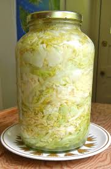

Sauercraut

how to lacto ferment delicious Sauercraut easily at home
Ingredients
- Fresh white cabbage
- Table salt
Steps
- wash the cabbage under tap water
- cut the cabbage and put them in a clean container
- weigh the cabbage
- sprinkle 2,5% of total weight in salt over the cabbage
- give them a mix until they become wet and put tem in a clean jar
- put a weight over the cabbage to sink them
- let them ferment in peace for at least 21 days with the jar lid CLOSED!!!
- after 21 days, open and enjoy.
Final considerations
If you intend not to eat all the Sauercraut at once, keep the jar refrigerated after you open it. Better to eat all the jar in a week or so
Want to know more about fermentation? Enjoy my free skool community
Click HERE
Feeling lost?
just go Home and have a breath